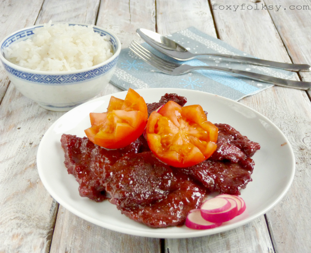

Pork Tocino Recipe
Description
Pork Tocino is a sweet and savory Filipino cured pork dish, perfect for breakfast or as a main course. It is typically served with garlic fried rice and eggs.

Ingredients
- 2 lbs pork belly, butt, or shoulder (cut into 1/4 inch slices)
- 3/4 cup brown sugar
- 1 tablespoons soy sauce
- 2 tablespoons rice vinegar
- 3 cloves finely minces garlic
- 1 1/2 tablespoons salt
- 1/2 tablespoons finely ground black pepper
- 1/2 tsp paprika
- 1/4 cup fruit juice (pineapple or apple)
- 1 tablespoon rice flour (optional)
- 1/2 tsp food coloring (optional)
- natural red food color (optional)
Instructions
- Mix all ingredients (brown sugar, soy sauce, vinegar, garlic) except the pork in a bowl.
- Add the pork to the mixture. Use gloves to avoid stains.
- Transfer to a container w/ cover and let it sit overnight. For best results: Let the pork marinate for at least 24 hours.
- Preheat the grill or pan over medium heat.
- Cook the marinated pork belly until golden brown and cooked through.
- Serve with garlic fried rice and eggs or as desired.
Enjoy!
Serve your Pork Tocino with steamed rice and enjoy a delicious meal!
>Back to Recipes
Go back to the recipe list